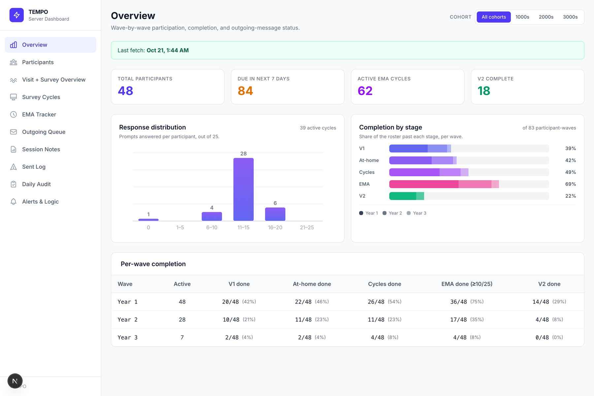
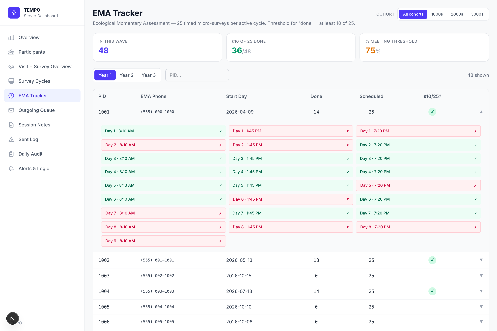
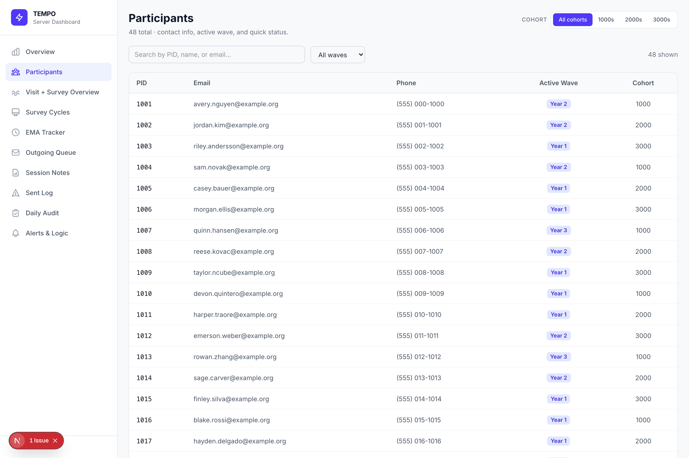
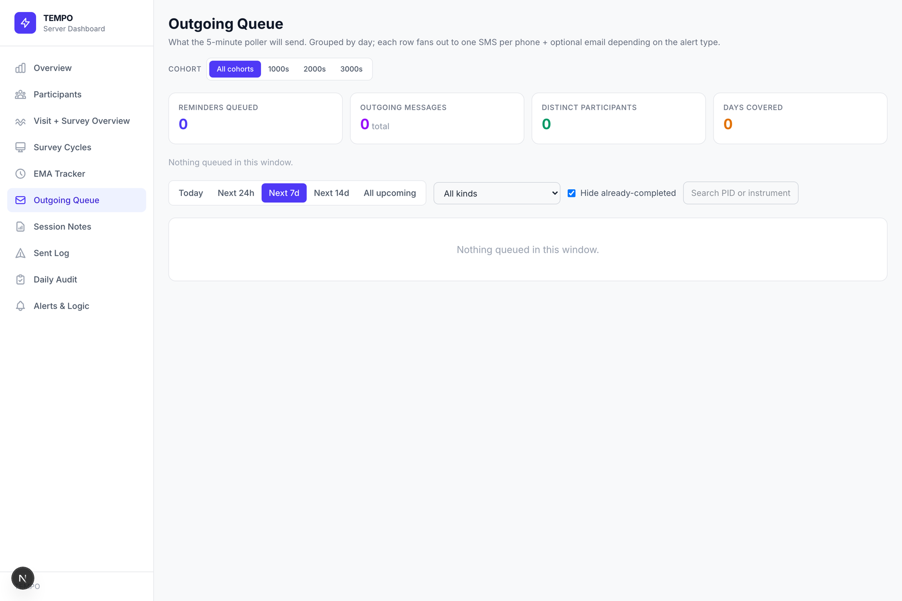
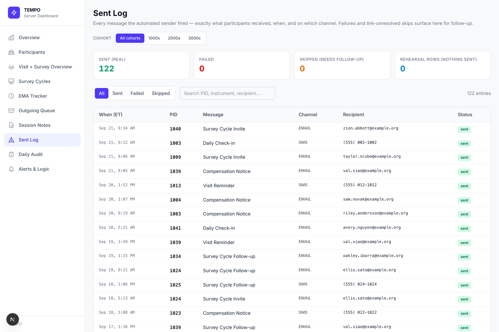

TEMPO sends scheduled messages to study participants. It reads a study's roster, date fields and per-form completion flags out of a survey platform, works out which participants are owed a message and when, sends it by SMS or email, and records every send.
The same mechanism covers a reminder due on a given day and an EMA prompt that has to fire at an exact minute.
A study already knows when things ought to happen: a consent date, a baseline visit, a form nobody has filled in yet. TEMPO turns that into a dated list of messages and works through it. Every step below runs from scratch on every invocation.
A message is declared once, as a rule rather than a date: fourteen days after the baseline visit, repeating weekly, at most three times, only while the form is still incomplete. On each run those rules are crossed against the current roster to produce one row per participant per occurrence, each carrying a resolved timestamp, a destination and a rendered body. That grid is the entire schedule for the study.
It is rebuilt from scratch every time. Nothing persists between runs except the record of what has already gone out, so correcting a date in the survey platform corrects every message hanging off it — there is no queue to migrate and no stale copy to reconcile. Selecting what to send now is then just a filter over that grid: the rows due inside this run's window whose conditions still hold — form still incomplete, participant not opted out, not quiet hours, survey link resolved, nothing matching in the ledger.
Nothing runs continuously. A cron schedule invokes the pipeline, and the only real requirement is that the runs are frequent enough that every slot falls inside one of them. A reminder due at 5pm needs a run at 5pm. An EMA prompt that has to land on a particular minute needs runs that overlap its slot, because schedulers are not punctual: the run picks the slot up a little early and waits in-process until the exact second rather than trusting the cron tick to be on time.
Running more often is safe. Each run recomputes the grid from the current export and checks the ledger before transmitting, so a spare invocation simply finds nothing to do. The cadence is therefore set by how precise the timing has to be, not by the risk of running too often.
The build here uses REDCap, OpenPhone and Gmail SMTP. Swapping any of them means reimplementing a few calls; Qualtrics, Twilio and SES offer the same operations.
| Integration point | What TEMPO needs from it |
|---|---|
| Survey platform | A record export, date fields, per-form completion flags, and a per-participant survey link |
| SMS provider | A send endpoint. Optionally a message-history endpoint, used to arbitrate against duplicates |
| SMTP credentials, or any HTTP send API | |
| Scheduler | Anything that can invoke a URL on a schedule — cron, a platform cron trigger, or a CI timer |
Field names below are placeholders for your own event and instrument names.
{
instrument: "Follow-up reminder",
// Owed only while the form is still incomplete.
condition: "[followup_arm_1][followup_1_complete]<>2",
// 14 days after the baseline date, then every 7 days, at most 3 times.
sendDateSpec: "14 days after [baseline_arm_1][baseline_date] " +
"repeat every 7 days up to 3 times",
// A phone field implies SMS, an email field implies email.
destinationSpec: "[baseline_arm_1][participant_phone]\t[baseline_arm_1][participant_email]",
// [event][field] fills per participant; [survey-link:form] becomes
// that participant's own URL, resolved at send time.
message: "Hi [baseline_arm_1][first_name], your follow-up is open: " +
"[followup_arm_1][survey-link:followup_1]",
}const anchor = participant.fields["baseline_date"]; // "2026-03-04"
const { offsetDays, everyDays, maxTimes } = parseSpec(alert.sendDateSpec);
const sends = [];
for (let n = 0; n < maxTimes; n++) {
if (isComplete(participant, alert.condition)) break; // responded, stop
sends.push(atStudyTime(addDays(anchor, offsetDays + n * everyDays), "17:00"));
}
// → 2026-03-18T17:00, 2026-03-25T17:00, 2026-04-01T17:00await fetch("https://api.openphone.com/v1/messages", {
method: "POST",
headers: { "Content-Type": "application/json", Authorization: API_KEY },
body: JSON.stringify({ content: body, from: FROM_NUMBER, to: [e164] }),
signal: AbortSignal.timeout(30_000),
});const mailer = nodemailer.createTransport({
host: "smtp.gmail.com", port: 587, secure: false,
pool: true, auth: { user: SMTP_USER, pass: SMTP_PASS },
});
await mailer.sendMail({ from, to: recipient, subject, text: body });A message that has gone out cannot be recalled, so at-most-once is enforced in three independent ways.
| Mechanism | What it catches |
|---|---|
Append-only ledgerpid|alert|time|channel|recipient | The ordinary case: a rerun, a retry, an overlapping schedule |
| Claim before transmit | Two runs hitting the same slot; only one wins the claim |
| Provider history check | A send that happened but whose ledger write was lost |
Other guards: quiet hours, an opt-out list checked at queue time and again at send time, a per-run cap, no send if the survey link did not resolve, dry-run by default, and a kill switch that takes effect without a redeploy.
EMA prompts ask what someone is doing at the time they are asked, so they have to arrive at the scheduled minute to be usable.
A sampling grid is a set of fixed weekday and clock-time slots. It gets anchored to each participant's start date and expanded into dated rows, each carrying their phone number and survey link. Stem height above is the time of day; the shaded columns are quiet hours.
// A sampling grid: slots repeat across the period, anchored per participant.
const GRID = [
{ day: "Mon", at: "08:10" }, { day: "Mon", at: "13:45" }, { day: "Mon", at: "19:20" },
// … 25 slots across the sampling period
];
for (const slot of GRID) {
schedule.push({
pid: participant.id,
sendAt: atStudyTime(nextWeekday(startDay, slot.day), slot.at),
phone: participant.fields["prompt_phone"],
surveyLink: await resolveLink(participant, slot.form),
});
}// Wait out the remainder in-process, then claim and fire.
const waitMs = slot.sendAt - Date.now();
if (waitMs > 0) await sleep(waitMs);
if (await claim(slot.key)) { // lost the race? another run has it
await sendSMS(slot.phone, render(slot));
await ledger.append({ ...slot, status: "sent", latencySec: 2 });
}It claims the slot before transmitting, so two overlapping runs cannot both send. Past the grace window a prompt is recorded as skipped rather than sent late. Measured latency in production is 2–4 seconds past the scheduled second, written to the ledger per message.
The dashboard shows what is scheduled, what has already gone out, and how far each participant has got through their own sequence. Screens below run on synthetic data.





Access is a shared password behind a signed cookie, checked in middleware on every route. A daily job reconciles what was scheduled against what the ledger recorded and flags anything missing.